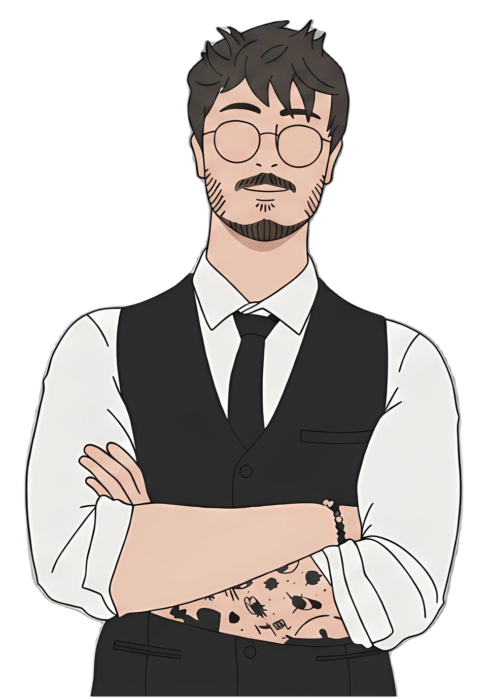

27, uit Arnhem. Begonnen op het MBO met applicatieontwikkeling, nu derdejaars HBO-ICT in Utrecht. Ik bouw websites en apps, en ontwerp ze het liefst zelf.
Junior Developer
27, uit Arnhem. Ik begon met een MBO-opleiding applicatieontwikkeling en zit nu in mijn derde jaar HBO-ICT aan de Hogeschool Utrecht. Ik bouw met React Native, React en TypeScript, en ik ontwerp het liefst zelf wat ik daarna bouw.
Naast mijn studie werk ik als freelance designer en developer. Ik maak websites voor ondernemers en bouw mijn eigen app, ChoreShare, een huishoud-app voor studentenhuizen die ik van nul heb opgezet.
Waar ik naartoe werk: een developer zijn die je een probleem geeft en een afgemaakt product teruggeeft. Geen half werk, geen buzzwords. In mijn vrije tijd vind je me aan de boulderwand of achter een film.
Kies een optie op het menu. Een bericht sturen kan direct hier.